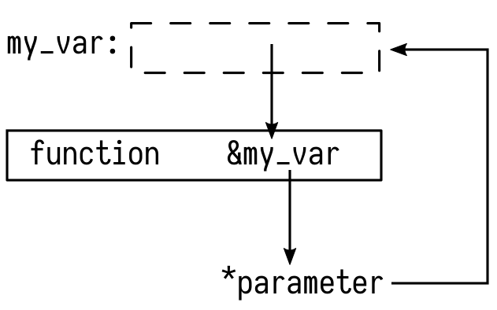

Rust üíñ C/C++
A memory-violating love story
whoami(1)
Katharina Fey ( @spacekookie )
- Active FOSS developer
- Avid tea drinker
- Hobbyist hardware maker
whoami(2)
I do Rust things!
- Contributer to the CLI-WG
- Author of (too) many
use[ful|less]crates - Member of
berlin.rs
Why
Why would you do that?
- Integrate into larger projects
- Replace application piece by piece
- Write plugins
Why give this talk?
Rust promises efficient FFI to C code
What does this mean?
ABI
ABI
Application Binary Interface
- Defines the function signature & types
- Much like an API but for linkers
ABI
ABI

ABI
Let’s talk about stability

Neither does C++
C doesn’t have an ABI
The operating system does
C code from Rust
Boring FFI
- Bind to native API with
externfunctions - Wrap function calls in
unsafe - Make data C-compatible
Boring FFI
std::os::raw & std::ffi contain FFI types
- (Rust)
StringbecomesCString - (Rust)
&strbecomesCStr voidbecomesc_void- … etc …
Turning tables
- Same
extern "C"as before - Take data in C-form
- Use
#[no_mangle]to preserve the function name
Turning tables
Some special fields in Cargo.toml
Turning tables
Integrating the Rust code into your build toolchain
├── CMakeLists.txt
├── reverso
│   ├── Cargo.toml
│   └── src
│   └── lib.rs
├── reverso.h
└── main.cNote the header reverso.h
Turning tables
Calling this from C is easy
#include "reverso.h"
void main() {
char * greeting = "–ø—Ä–∏–≤–µ—Ç RustConf üë©üèΩ‚Äçüíª";
printf("'%s' reversed: '%s' \n", greeting, reverse(greeting));
}'—Ä–∏–≤–µ—Ç RustConf üë©üèΩ‚Äçüíª' reversed: 'üíªüë©üèΩ fnoCtsuR —Ç–µ–≤–∏—Ä–ø'Thank you
Tweet at me @spacekookie
Like, Share & Subscribe…
Alright, not quite
Some Problems
- I don’t want to write headers
- How to deal with anything going wrong?
- Oh god, real memory management! üò®
- How to build pretty APIs?
Tooling
cbindgen
Don’t write headers yourself. Use cbindgen
- Like bindgen, but in reverse
- Can generate
.hfiles at compile-time
Build system support
üòè
Memory management
Memory management
Put your troubles in a box ✨
#[repr(C)]
struct MyThing {
/* ... */
}
#[no_mangle]
extern "C" fn make_thing() -> Box<MyThing> {
Box::new(MyThing {
/* ... */
})
}
üì¶ Boxes üì¶
Remember: C is now responsible for the memory.
You can’t make the native code memory safe
Communicating Errors
- Errors in C
- Errors in C++
Emulate Result<T,E> with a structure
üëâ Pointers

Errors in C
Errors in C
Errors in C Rust
Errors in C++
Well…
Errors in C++
Wrap C-errors in exception throwing code
Errors in C++
Can you throw a C++ exception from Rust?
üò±
Yes!
Exceptions
try - throw – catch
try creates a “landing pad”
throw walks up the stack
Then calls catch
try
Landing pad determines how to continue
catch
But which one? Filter or rethrow!
Throw
Replaced with calls into libc++
This is a talk about Rust
exception.rs
extern crate exception_rs as exception;
pub extern "C" fn oh_no() {
exception::throw(RustException { text: "Oh noes!" });
}Oh god please don’t use this! (soon™ on crates.io)
No libc++ bindings in Rust
Invoke apropriate functions via C shim layer
extern void *__cxa_allocate_exception(size_t thrown_size);
extern void __cxa_throw(void *e, void **t, void (*dest)(void *));Functions are linked when C++ project is compiled

Can you catch a C++ exception in Rust?
Yes. But not today
Thank you (for real)
Follow me on twitter @spacekookie
Or: kookie@spacekookie.de
- üíö My employer: Ferrous Systems
- üß° Mozilla
- ❤ All of you